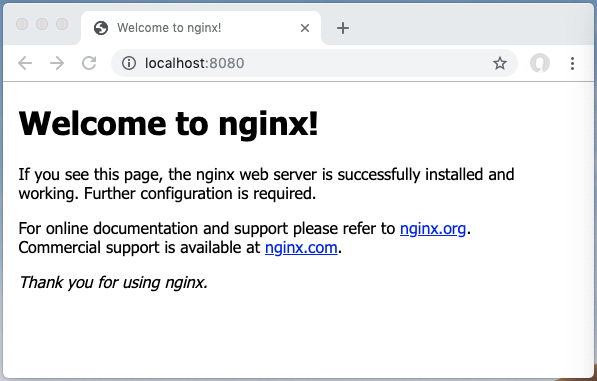

Welcome to EE491F Data Driven Web Development
Syllabus
Philosophies
- This course is designed to be a guide for the student as they find their way when building their own web application that is live on the Internet.
- This course goes through concepts and exercises that will teach the basic usages of tools that will help the student developer build their web application.
- This course is intended to help the student finish their project using project management ideas from industry that is tailored for the classroom setting.
- During the course, the course instructor will play a product manager role and the student developers will play the role of project manager and developers.
- This course aims to provide you with experiences and a product you can talk to interviewers with by putting you in a team environment so you can gain experience working with others and for a pseudo-manager.
- This course also moves away from the academia's built-in idea that someone will always have the answers to teach you. Instead it moves closer to the real-world where nobody knows the answer, but we are all going to figure it out together. In other words, there will be more guiding than teaching in this course.
Be empathetic to fellow classmates and colleagues.
It is harder to be kind than clever.Jeff Bezos
Logistics
- This website (https://zhaol.github.io/ee491f/) will guide you through the entire course.
- There will be a weekly status update to be filled out on Google Docs (Drive) to discuss project progress and guage whether additional meetings are necessary to help students get over obstacles in learning and developing their project.
- Everything needed for this course is available on the Internet.
- Communication between the course participants will be handled using online collaboration tools.
- To post a question/comment/concern, send email to main+int+1234+2857229824036714752@university-of-hawaii-ee491f.groups.io
- All announcements and official correspondence will be handled through the mailing list.
- Please get comfortable with using Groups.io as soon as possible.
- Please note that all email correspondence with this mailing list is public so feel free to use a fake email address if you have concerns about privacy.
- This mailing list format was chosen to allow students to leverage questions and answers from previous semesters.
- To view/manage previous messages, browse to https://groups.io/g/university-of-hawaii-ee491f/topics
- To real-time collaborate/chat with others, use Slack
- please note that questions asked on Slack can be easily lost; please use the mailing list to ensure your questions/comments/concerns get addressed appropriately
- An invitation email will be sent to your hawaii.edu email address at the start of the semester
- If you prefer to use Slack under another email address, please email your preferred email address to the instructor
- After following the sign up instructions from Slack's invitation email, you can sign in at https://hicapacity.slack.com; use channel name
#university-of-hawaii-ee491for go to https://app.slack.com/client/T02AS3PAA/CRG8VB7UH - Please remember that HiCapacity is a local Hawaii group of technology enthusiasts. This forum was chosen to make it easier to possibly connect with others in the industry so you are not limited to just peers in this course and academia. This course is not affiliated with HiCapacity in any way except for this collaboration chat channel.
- If you need assistance with your code, please be prepared to share your development environment with Visual Studio Code's Live Share feature:
- https://visualstudio.microsoft.com/services/live-share/
- The free community version is sufficient.
- You need a free Microsoft or GitHub account to use Live Share
- To post a question/comment/concern, send email to main+int+1234+2857229824036714752@university-of-hawaii-ee491f.groups.io
- Weekly office hours are coordinated at: TBD
- Teleconferencing and face-to-face meetings can be made by appointment as needed
- Everything you need for this course is free. You should not need to pay for anything to complete this course.
Resources
- Every course participant will need to have a computer with Internet access. The computer must be able to support the development environment required to develop the course project.
- All of the essential material for this class will be provided by this website, whether as content directly on this website or content linked from this website.
- Every tool and service used in this class should be free. Please do not sign up for any paid plans.
- Every tool and service used in this class should have their own online documentation and possibly support team. Please do take advantage of their support resources.
- All of the concepts and technologies we use in this class are open source and freely available on the Internet.
- That means there are a lot of open and freely available resources on the Internet to help new users get started.
- Additionally, there have been many others who has embarked on the journey you are about to commence and have left insightful material for you in the form of blog articles you can search for on Google, questions & answers you can find on StackOverflow, and messages on forums and chatrooms.
- This satirical article sums it all up. (The article seems to be not accessible anymore, but here is a Tweet about it.
Grading Policy
| Percentage | |
|---|---|
| Communication e.g. timely updates, transparency into own work, etc. This is something that is really important in the real work place, but is not emphasized enough in academia. Academia typically rewards a student that works alone and just turns in work by a deadline without any help from others. In the real world, it is better to update your team as you are progressing through your part of the group task, whether you are encountering obstacles or moving along smoothly. It is sometimes more worrying for a project manager when a team member is not bringing up issues, because that seldom happens in real life. A good project manager will create an environment where there is no judgment based on status updates and instead emphasize status updates as a way for the team to help one another through each other's obstacles and hence, leverages each of the team member's unique talents, skills, and gifts. | 10% |
| Proactiveness e.g. reaching out for help when stuck, trying different ways to find a solution, continual progress, etc. One of the things that differentiates a junior from a senior team member is knowing when to give up and ask for help. My rule of thumb when starting out on something totally new and foreign is to err on the side of asking for help rather than continuously banging your head on a problem. This quote formalizes this concept but applies it more generally. ...The wisdow to know the difference.Reinhold Niebuhr | 10% |
| Project At the end of the day, companies need to deliver and ship their products. If they don't, then they will be out of business. There will always need to be a balance between learning and delivering when you work on any project. This is yet another skill to that needs to be developed. These are some things can keep a project from succeeding: over-engineering gold-plating | 80% |
| Total | 100% |
{kind=link}
| Average | Grade |
|---|---|
| 85% or greater | A or better |
| 70% or greater | B or better |
| 55% or greater | C or better |
| 40% or greater | D or better |
- The +/- grading system will be used in this course.
- Grade boundaries will be set to whole numbers (e.g. 82 not 82.3)
- Precision and rounding will be handled by Laulima
Project
The goal of this course is for every student or team of students to build a web application that interacts with data and is accessible by anyone on the Internet. All of the exercises at the beginning of the course is aimed at teaching you the tools and technologies needed to accomplish deploying your project on to the Internet.
Requirements
Students and student teams can choose a project that they are most interested in. If you have an idea you always wanted to build or would like to see available to the world, those will make the best projects.
The project you decide to build must meet these requirements:
- The project shall be accessible on the Internet.
- Any user shall be able to interact with the project without doing a lot of setup.
- For example, a user should be able to interact with your project using only their web browser.
- The project shall be dynamic and not static.
- For example, the project cannot be a static website, like the one you are reading. Data needs to be able to change without the code changing and the website will change to reflect the updated data.
Web applications lend itself to these requirements extremely well. Anyone with a web browser and Internet access can interact with the project. However, if there is a project you want to build that does not meet these requirements, please propose it and we can work together to make it fit this course.
Rubric
The project will consist of these phases:
- Project proposal and team forming
- This is when you decide what to work on and who to work with.
- Pick a medium to share your idea with others.
- It can be a video of you presenting your idea.
- It can be a short write up of your idea.
- You can build the project by yourself if you want.
- Project Mid Review
- Your project should be live on the Internet and accessible by any user.
- This is when you get instructor feedback on your project.
- Points will be given as if it was the final review so you know where your project stands in terms of grade.
- If the course ended now and you had to submit your project as-is, what would your final score be.
- This will give you an idea of where you stand and what you need to focus on for the final stretch of the course.
- Project Final Review
- Your project should be live on the Internet and accessible by any user.
- You should have a video demonstration of your project.
- This can be a screencast or just a video recorded from your phone.
- This video should go through what your project is and how a typical user would use it.
- Project will be graded and grades will be turned into Laulima.
The points given for the project is detailed in the table below.
| Item | Point |
|---|---|
| Accessible on Internet | 40% |
| Functional (can create, read, update, and delete data) | 15% |
| User Interface (easy to navigate, appealing appearance, navigation menu/links, etc.) | 15% |
| User Accounts (authentication and authorization) | 10% |
| Code Metrics (e.g. Test Coverage, Documentation Coverage, Code Style Linting, self-documenting code, appropriate comments, security scanning, static code analysis, etc.) | 10% |
| Uniqueness (graphs/charts of data, complex backend algorithm, a feature that can be highlighted and sold as different from other projects, etc.) | 10% |
Development Environment
A development environment is where we will be developing (i.e. building) our project. For this course, your development environment will, at a minimum, require Git and Docker containers. Other requirements will be added depending on your project.
Git is how we manage our application's code, which controls our application. Docker containers is how we manage our application's dependencies, e.g. libraries, operating system packages, and other environment requirements. With these two tools, we can control our application and its environment. Being able to control your application and its environment allows any developer, teammate, or instructor to pull up your project on their own development environment. This can be useful if you need help troubleshooting or to get feedback on a feature you are developing. Having the application and its environment controlled avoids the age-old problem of "it works on my machine".
Git can be installed on any operating system, but docker containers has more support for Linux based operating systems. Windows support is growing, but until containers on Windows and Linux works seamlessly together, this course will use Linux containers for grading.
Development Environment Recommendations
You can set up your development environment anyway you choose as long as it supports Git and containers. If you do not have a preference, then the following recommendations are good starting points:
Linux Operating System: containers will run natively on your machine's operating system. You can use any flavor of Linux that is supported by Docker, but if you have no preference, then the easiest distribution to start learning on is Ubuntu.
Mac Operating System: containers can run on Apple deskop and laptops with Docker for Mac. This is the setup I work with on a day-to-day basic, so it will be the easiest for me to lend a hand with this setup.
Windows Operating System: there is a Docker for Windows, but my experience with it is limited. My recommendation is to install Ubuntu as a virtual machine inside your Windows machine. You can use Virtual Box to manage the Ubuntu virtual machine. To summarize, your host machine will be Windows and your guest virtual machine will be Ubuntu.
Version Control System
A version control system is a tool that allows you to track the changes to your source code. If you've ever backed up your program and saved it to a folder with a timestamp then you've been manually controlling the changes (i.e. versions) of your program. A version control system will help you track those changes (i.e. versions) automagically.
Git
The version control system we will be using for this class is Git. Git is the most popular and has a lot of supporting services. You will need Git for this course, so please download and install Git before getting started with the Git exercises.
Read this tutorial to understand how to create a new project using git. The tutorial will touch on these items:
Read this tutorial to understand how to save and load code. The tutorial will touch on these items:
GitHub
Github is one of those services that support Git. Github allows users to share the code they version control with Git. There are other services that compete with Github, but a lot of open source projects use Github so that is the one we will be using for this class. You will need a Github account for this course, so please sign up for a free account here.
Read this tutorial to understand how to share code. The tutorial will touch on these items:
Collaboration
One of the biggest benefits of using git and GitHub is so you can collaborate on code with others. In this class, you will be collaborating with your classmates.
Read this tutorial to understand how to collaborate on code with others. The tutorial will touch on these items:
Git and Github Exercises
The following exercise will give you a chance to practice everything you've learned about Git and Github.
- Make Changes to a Repository
- Use this repository: https://github.com/zhaol/git-practice-for-anyone
- You can follow the instructions here: https://github.com/zhaol/git-practice-for-anyone/blob/master/README.md
If you want to learn more about GIT, take a look at these resources:
Containers
Container technology allows you to keep your application and dependencies isolated from other applications. Another way to look at it is that containers help you manage your application and its dependencies.
Every application is comprised of its application code (source code) and its dependencies' code (environment). If we are able know exactly what changed with the source code and the environment, then we should have total control of the application, which will help us track down why the application is not behaving as we expect it to.
With a version control system we have complete control of the source code. With containers, we have complete control of the environment. Using these two tools together, we will have complete control of everything an application needs to work properly. This also means we should be able to know exactly what changed with the source code/environment and what needs to be fixed.
The only things that are out of our control is the networking and hardware, which this class will not focus on.
Docker
The container platform we will be using for this class is Docker, because it is popular and has a rich ecosystem of tools surrounding it. Please install docker on your development environment. Please install the free community edition.
Docker-Compose
Docker-compose is a tool to help us stitch containers together. It also makes it easier to interact with docker through configuration files. Using just docker alone will require using command line arguments. The benefit of using configuration files over command line arguments is that configuration files can easily be source controlled and shared with other developers as well as being more declarative instead of imperative. Please install docker-compose on your development environment.
Read these tutorials to understand how to use docker-compose:
The above tutorials (and its respective docker-compose commands) will allow you to work with containers on your own machine. This is already hugely beneficial because the application container is isolated from your host machine so you do not have to worry about artifacts from your application spilling out into your development machine (e.g. the host machine) and you do not have to worry about artifacts from your development machine (e.g. the host machine) spilling into your application. You now have full control of your application and its environment.
Docker-Compose wraps around Docker so everything docker-compose is doing, you can do the same thing manually with docker and its associated command line arguments. Using docker-compose is a bit easier and requires less typing, but there will be times when you might need to dive deeper into docker and the capabilities docker provides, which might not be provided by docker-compose. You can learn those docker commands as it is needed when you are troubleshooting.
For the purposes of this course, we will interact mainly with docker-compose instead of dealing with Docker directly.
The following article will highlight some of the nuances of using containers.
Docker-Compose Exercises
The following exercise will give you a chance to practice everything you've learned about containers, Docker, and Docker-Compose.
- Use Docker-Compose to bring up a nginx service and a tomcat service.
- Running
docker-compose upshould bring up both services - A browser on your development machine should be able to see each service's splash screen 
- If you are stuck, you can reference this example
docker-compose.ymlthat is one possible solution to our exercise: an example docker-compose.yml

- Running
Front-End
The front-end of an application is what the user interacts with. It can be a web application, a desktop application, mobile phone application, smart watch application, etc. For our web application, our front-end will be the part of the application that runs on the user's browser, which will be HTML, CSS, and JavaScript (aka JS).
When you are going through the tutorials/articles, it is good to follow along the tutorials/articles by creating your own web page that uses the information presented in the tutorial/article. This follow-along web page is the web page referred to by the HTML, CSS, and JavaScript sections.
You can find an example follow-along web page here.
HTML
HTML stands for Hyper Text Markup Language. We will use HTML to define the contents of our web page.
To get started with your first web page using HTML, read these tutorials:
- basic tutorial (stop after "HTML Colors")
- a deeper tutorial (stop after "HTML - Fonts")
To understand how the browser is reading and interpretting your HTML page, you can use a browser's console. Each browser has their own developer console.
The browser console is how you can debug and troubleshoot your web page code, much like how you use printf statements when you programmed in C.
When using HTML, it is helpful to understand attributes.
Knowing the basic HTML tags and attributes will get you pretty far. The rest of the available tags and attributes can be learned as you go along and find a need for them. Here are some reference lists of the available tags and attributes.
From the tutorials, you should have a basic understanding of:
- HTML's syntax
- how to open a HTML page in a browser
- how to debug and troubleshoot HTML using a browser's developer tools
- basic, common HTML tags/elements
HTML Exercises
These exercises will give you an opportunity to add and work with some basic HTML elements. Some exercises are designed to help you understand how to use HTML tags; other exercises will give you a chance to see how you would use the HTML tags to build your project.
Get familiar using these common HTML tags by adding them to your web page:
Get familiar using these common HTML attributes by adding them to your web page:
If you want to learn more about HTML, take a look at these resources:
CSS
CSS stands for Cascading Style Sheets. We will use CSS to style our web page. More specifically, we will use CSS to style the HTML (aka contents) of a web page.
To add CSS styling to your first web page, read these tutorials:
- how to add CSS styles to a page (external style sheet is the recommended way)
- basic tutorial
- a deeper tutorial (stop after "CSS Specificity")
To understand how the browser is reading and interpretting your CSS code, you can use a browser's console. Each browser has their own developer console.
The browser console is how you can debug and troubleshoot your web page code, much like how you use printf statements when you programmed in C.
When using CSS, it is helpful to understand these concepts:
Knowing the basic CSS selectors and properties will get you pretty far. The rest of the available selectors and properties can be learned as you go along and find a need for them. Here are some reference lists of the available selectors and properties.
Here are some more advanced CSS features that is fun to play with and add to your toolbox of things you can create with (or at the very least, know that they exist and can be used to solve future problems):
CSS Exercises
These exercises will give you an opportunity to add and work with some basic CSS rule-sets. Some exercises are designed to help you understand how to use CSS rule-sets; other exercises will give you a chance to see how you would use the CSS rule-sets to build your project.
Get familiar using these common CSS selectors & properties by adding rule-sets that use them to your web page:
- .class
- #id
- element
- [attribute]
- [attribute=value]
- ancestor_selector descendent_selector
- ancestor_selector and descendent_selector can be any selector, such as .class, #id, element, or attribute
- parent_selector > child_selector
- parent_selector and child_selector can be any selector, such as .class, #id, element, or attribute
- selector1, selector2
- selector1 and selector2 can be any selector, such as .class, #id, element, or attribute
- .compounding[selectors]
- be aware of CSS specificity
- color
- background
- box model
These are good exercises to help practice using selectors:
If you want to learn more about CSS, take a look at these tutorials:
JavaScript
We will use JavaScript (JS) to program the behavior of our web page.
To add JavaScript to your first web page, read these tutorials:
- how to add JS functionality to a page (external JavaScript is the recommended way)
- basic tutorial (stop after "JS Array Iteration")
- JavaScript interacts with the HTML elements using the Document Object Model (DOM)
To understand how the browser is reading and interpretting your JS code, you can use a browser's console. Each browser has their own developer console.
The browser console is how you can debug and troubleshoot your web page code, much like how you use printf statements when you programmed in C.
A very common pattern in JavaScript is to wait/listen for an event and then take some action after that event happens, aka the event is triggered. For example, wait for a button to be pressed and then change a text once the button is pressed. We generally target elements by their id, class, and/or attribute(s) to listen to. And then trigger changes to the same or another target element's class and/or attribute(s).
Knowing this basic pattern will get you pretty far. The rest of the available techniques, nuances, and tricks can be learned as you go along and find a need for them.
For this course, it is recommended that you use a JavaScript library like jQuery and/or Bootstrap to free yourself from building everything from scratch.
Read through jQuery's API to get familiar with the different events and actions you can use in your program.
Look through Bootstrap's documentation to get familiar with the different layouts and components you can use on your page.
JavaScript Exercises
These exercises will give you an opportunity to add and work with some basic JavaScript. Some exercises are designed to help you understand how to use JavaScript; other exercises will give you a chance to see how you would use the JavaScript to build your project.
Get familiar using these common jQuery/Bootstrap features/concepts:
- Selecting elements to operate on
- The syntax is very similar to CSS selectors
- JQuery's list of selectors
- JQuery's list of traversing methods
- Be familiar with
#id,.class,element,[attribute],[attribute=value], ancestor/descendent, parent/child, multiple selectors, combinators, and compounding. - Also familiarize yourself with
.add(),.children(),.each(),.filter(),.find(),.first(),.last(),.has(),.not(),.parent(),.parents(),.siblings()
- Handling events
- More on events
- JQuery's list of events
- JQuery's list of form events
- Be familiar with
.click(),.hover(),.on(),.off(),.change(),.blur(),.focus()
- Triggering Actions
- Actions can be:
- Displaying Effects
- JQuery's list of effects
- Be familiar with
.fadeIn(),.fadeOut(),.fadeToggle(),.hide(),.show(),.toggle(),.slideUp(),.slideDown(),.slideToggle()
- Interacting with the DOM (aka HTML elements and their CSS properties)
- By Attributes
- Be familiar with
.hasClass(),.addClass(),.removeClass(),.toggleClass(),.attr()
- Be familiar with
- By CSS
- Be familiar with
.css()
- Be familiar with
- By HTML
- Be familiar with
.after(),.before(),.append(),.appendTo(),.prepend(),.prependTo(),.remove(),.replaceAll(),.replaceWith()
- Be familiar with
- By Attributes
- Displaying Effects
- Add some content using Bootstrap's layout, container, & grid system
- Style some text with Bootstrap alerts
- Add a Bootstrap NavBar
- Style some HTML element with Bootstrap borders
If you want to learn more about JS, take a look at these resources:
Back-End
The back-end of an application is everything that user does not interact with, but is required to support the front-end. This includes services like databases, publish/subscribe service, external 3rd party services, etc. For our web application, our back-end will be the part of the application that in not running on the user's browser, which includes our server and database. There are many technologies for servers and databases, but for our class, we will focus on using:
- Django, a web application framework written in Python
- PostgreSQL, a database
Python
We will use Python to program the server.
Get a basic understanding of Python by going through the tutorials on learnpython.org. It is sufficient to stop at "Modules and Packages" under "Learn the Basics". Note that the exercises in "Modules and Packages" error out so feel free to just read through it and skip those exercises.
Get a basic understanding of how to run Python:
To learn more about Python, then go through the remaing tutorials on learnpython.org, namely up to "Map, Filter, Reduce" under "Advanced Tutorials".
Python Exercises
These exercises will give you an opportunity to add and work with some basic Python. Some exercises are designed to help you understand how to use Python; other exercises will give you a chance to see how you would use the Python to build your project.
Work out the exercises on this page that has 1 or 2 chili peppers. The exercises with 3 or more chili peppers might take up too much time and detract you away from your final project. However, if you have time to spare, feel free to try out the more difficult exercises.
Combine what you know about Python and containers to:
- run Python scripts inside a container
- run Python interactively inside a container
If you still have more time to spare and would like to go beyond the scope of this course, check out these sites for more practice:
Django
We will use the django framework to build the server. Django is written in the Python programming language.
To create your first django web application, read this tutorial.
At the end of the tutorial, you should have an application that resembles the one in this article.
Django Exercises
These exercises will give you an opportunity to add and work with some basic Django concepts. Some exercises are designed to help you understand how to use Django; other exercises will give you a chance to see how you would use the Django framework to build your project.
Update the app from this tutorial by:
- modifying an existing page in the app
- adding a new page to the app
Read the tutorials from part 1 to part 7 here. Combine the knowledge from this 7-part tutorial with this tutorial and this tutorial to build out your new, simple, and basic django web application.
This new applicaion can be any simple idea you can think of. A simple todo app is the "hello, world" equivalent you saw in C:
- An explanation of the todo app concept (but geared for JavaScript)
- An implementation of a Django todo app that you can reference
If you already have a project idea in mind, you can start building the basic functionality of that idea for this exercise.
The only requirement for this new application is that the user is able to use the web application to save data, view data, update data, and delete data. These common, basic functionalities are known as CRUD. It is up to you what kind of data the application works with.
If you want to learn more about Django, take a look at these resources:
PostgreSQL
PostgreSQL is a database. Databases are software used to store, access, and interact with data. A query language is the language/syntax used to interact with the data inside a database. The PostgreSQL database supports the structured query language (SQL).
To get started using postgreSQL, read this tutorial.
Once you have your own instance of PostgreSQL to use, you can reference the PostgreSQL documentation to learn more about the different capabilities this database gives you: http://www.tutorialspoint.com/postgresql/
For additional reference tutorials, these can be helpful:
PostgreSQL Exercises
For these exercises, we will play around with PostgreSQL using SQL and Python. People who work primarily with databases (aka database administrators) will normally use SQL, but (web) application developers will normally use an object relational mapping library to interact with the PostgreSQL database. ORMs allow developers to work with a database using the application's programming language (e.g. Python in our case).
Django's ORM library is the engine/library that allows you and your application to interact with the database thru Django's models and QuerySets. Django's ORM will translate your application Python code into SQL commands that PostgreSQL will understand.
Follow the PostgreSQL tutorials here to learn how to:
- create a table
- add data to a table (aka insert)
- search a table for data (aka query, select)
- update data in a table
- delete data in a table
- join data across tables
You can use the PostgreSQL database in container from this tutorial to practice the above commands.
Our end-goal is to create Django application so it is best to know how to use a database by leveraging the Django framework. Follow this Django tutorial here to learn how to:
- creata a model (Section "Creating a blog post model")
- create/run migrations to support a model (Section "Create tables for models in your database")
- use a model to fetch data (Section "All objects")
- use a model to create data (Section "Create object")
- use a model to do a more advanced search on the data (Sections "Filter objects", "Ordering objects", and "Complex queries through method-chaining")
You can use the Django application from this tutorial to pratice the above Django model features. As a note, Django defaults to using the SQLite3 database if it is not configured to use any particular database, like PostgreSQL. But the ORM handles all of that transparently to the developer, so it doesn't really matter which database we're using for this particular exercise as long as we are using the ORM to interact with it.
If you want to learn more about PostgreSQL, take a look at these resources:
If you still have more time to spare and would like to go beyond the scope of this course, check out this site for more practice:
Production
Thus far, we have developed and used things that are only accessible by us on our own development machine. At some point, in order for other users to utilize what you have built, you need to deploy your application to a production environment for others to access. The web is a great way to distribute your application to others and the simple web applications you've made can be deployed to web servers for anyone with Internet access to access.
There is a whole field dedicated to taking an application to production. It is called developer operations (devops).
The focus of this course is developing an application, not deploying one. But it is extremely gratifying to see your application deployed and see how the code that you write can eventually be used by anyone the world. So to keep you focused on developing your application, but still give you the benefit of seeing your application deployed, we will use a free and relatively easy to use service to help deploy your application.
Heroku
Heroku is a commercial service that deploys and hosts applications. It is essentially a devops team for hire. We will use Heroku to deploy our application because it is free and relatively easy to use.
By using Heroku, you will get a sense for what devops is trying to accomplish, which is to make deploying your application be as simple, automated, and reliable as possible.
Heroku is able to deploy web application written in many different languages. For our class, we will leverage Heroku's ability to deploy containers to help deploy our containerized application:
There are other options for us to use to deploy our Django application, like using Heroku's Python buildpack:
There are even more options to deploy applications outside of Heroku, but those are outside the scope of this course. This course arbitrarily chose Heroku because it is free and relatively simple. The course material is written to support using Heroku's container deployment feature because learning to deploy a container will offer more flexibility to the developer in the future. Using Heroku's Python buildpack is probably simpler, but might be more limiting in terms of future growth. However, students can choose whichever deployment process s/he prefers as long as the web application is hosted and accessible by the instructor via a web browser with an Internet connection. This can include deployment services outside of Heroku.
Heroku Exercises
For these exercises, we will practice using Heroku's deployment and hosting service.
Follow the Heroku's documentation here to:
- create a free account
- install their command line interface (cli)
- understand the Git workflow you need to follow to use their service
- deploy Heroku's sample django application
- deploy an application container
There are multiple ways to deploy an application to Heroku. After completing these exercises, you have learned to deploy using Heroku's Git/Buildpack and Docker/container method.
The recommended deployment approach for this class is to use the Docker container method. The reason is because the industry as a whole is moving towards using containers and learning this approach will be more beneficial to you in the long run. However, whichever method you use will have no effect on your course grade.
The main objective is to be able to consistently and repeatably deploy your application so your users, which in this course, will be the instructor and possibly a few of your classmates, can access the latest version of your application.
Where To Go From Here
In this course, you have built a web application using the Django framework and deployed the application on to the Internet using Heroku.
The web application you have built uses an architecture that is a bit outdated. However, it is simplest in terms of learning and getting started. That is the reason why it was chosen.
If you enjoyed building a web application, then you can consider splitting up the Django appliation to a separate frontend application (e.g. VueJS, ReactJS, etc.) and a separate backend application (i.e. use Django as just a REST API server). Most modern web applications are structured in this manner. With a separate backend service (e.g. REST API server), the application can support multiple frontends (e.g. web browser, mobile app, etc.).
If you enjoyed stitching the different containers and services together, then you can consider looking into doing more devops (e.g. continuous integration and continuous deployment, the service Heroku provides), infrastructure (e.g. cloud), or architecture (e.g. microservices, high-level system overview).
Choose what you enjoy and you won't go wrong. If you don't know what you enjoy yet, then try a bit of each and see which one sparks joy for you.
Good luck to you and stay hungry, stay foolish.